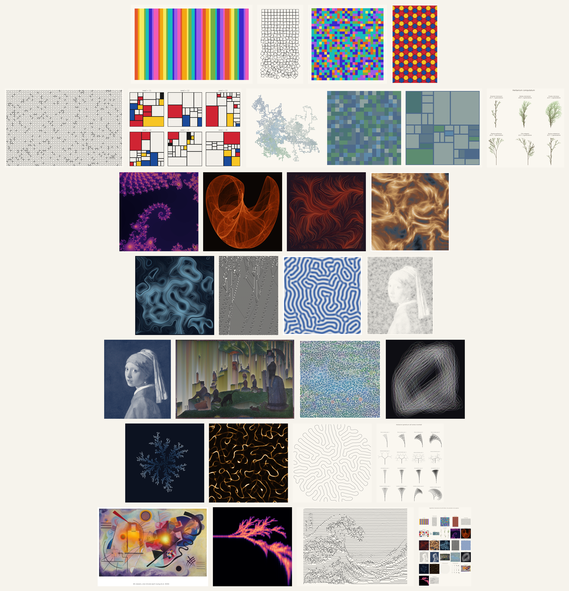

Algorithmic Generative Art with Python#
A hands-on book teaching mathematics and Python through the making of generative art, written for art history students.

Chapters#
Prelude#
Ch. |
Title |
Core method |
Art anchor |
|---|---|---|---|
0 |
Python basics, notation, first matplotlib |
stripe painting: Stella, Davis, Riley, Buren |
Part I · Foundations#
Ch. |
Title |
Core method |
Art anchor |
|---|---|---|---|
1 |
loops, randomness, plotting |
Sol LeWitt, Georg Nees Schotter, Vera Molnár |
|
2 |
distributions, seeding, weighted choice |
Arp, Duchamp, Cage, Kelly, Richter |
|
3 |
trigonometry, rotation, tiling |
Alhambra, girih tiles, Owen Jones, Escher |
|
4 |
grid randomness, tile sets |
Truchet 1704, Douat, Smith, 10 PRINT |
|
5 |
recursive functions |
Mondrian, De Stijl |
|
6 |
RGB/HSV/LAB, k-means |
Itten, Albers, Rothko |
Part II · Growth and Iteration#
Ch. |
Title |
Core method |
Art anchor |
|---|---|---|---|
7 |
string rewriting, turtle graphics |
Merian, Besler, Haeckel, D’Arcy Thompson |
|
8 |
complex iteration, escape time |
Mandelbrot, Hokusai, the Pollock controversy |
|
9 |
iterated 2D maps, density rendering |
Lorenz, Gleick, Pickover, de Jong |
Part III · Fields and Grids#
Ch. |
Title |
Core method |
Art anchor |
|---|---|---|---|
10 |
coherent noise, vector fields |
Perlin, Tyler Hobbs Fidenza |
|
11 |
Worley noise, ridged fbm, domain warping |
Ebru marbling, Worley, Musgrave, Quilez |
|
12 |
curl noise, seamless loops |
Bridson, phenakistiscope, the GIF |
|
13 |
rule tables, Game of Life |
Jacquard loom, Anni Albers, Conway |
|
14 |
Gray-Scott model |
Turing 1952, Morris, Jugendstil ornament |
Part IV · The Image, Transformed#
Ch. |
Title |
Core method |
Art anchor |
|---|---|---|---|
15 |
tessellation, Lloyd relaxation |
Seurat, mosaic, Secord stippling |
|
16 |
convolution, Gabor, Floyd-Steinberg |
Lichtenstein, halftone, glitch |
|
17 |
sorting, masks, interval detection |
Paik, Menkman, Asendorf |
|
18 |
collision tests, greedy growth |
Kandinsky, Kusama, the Apollonian gasket |
Part V · Agents and Complexity#
Ch. |
Title |
Core method |
Art anchor |
|---|---|---|---|
19 |
Boids, simulation |
Calder, Riley, teamLab, Reynolds 1987 |
|
20 |
diffusion-limited aggregation |
Bentley, Lichtenberg figures, Witten & Sander |
|
21 |
agents coupled to a field |
slime mold, Tero, Barnett, Jenson |
|
22 |
neighbor forces, node insertion |
Nervous System, Anders Hoff, kale and coral |
|
23 |
mutation, selection by eye |
Dawkins, Latham, Sims |
Part VI · Coda#
Ch. |
Title |
Core method |
Art anchor |
|---|---|---|---|
24 |
kernel density estimation |
Yarbus, museum eye tracking |
|
25 |
additive synthesis, spectrogram |
Kandinsky, Fischinger, Xenakis |
|
26 |
SVG, line displacement, hatching |
Molnár, Nake, the pulsar plot |
|
27 |
combining techniques |
Boden, Molnár’s late fame, the NFT arc |
How to use this book#
Every chapter is a fully executed notebook: all generated art is embedded, and reading online requires no installation.
How to cite#
If you use this book in your research or teaching, please cite it as:
Long, Xingyu. Algorithmic Generative Art with Python. 2026. https://xyslong.github.io/agap/
@book{long2026agap,
author = {Long, Xingyu},
title = {Algorithmic Generative Art with Python},
year = {2026},
url = {https://xyslong.github.io/agap/}
}
Code is licensed under the MIT License; text under CC BY 4.0. Images generated by students belong to the students who made them.